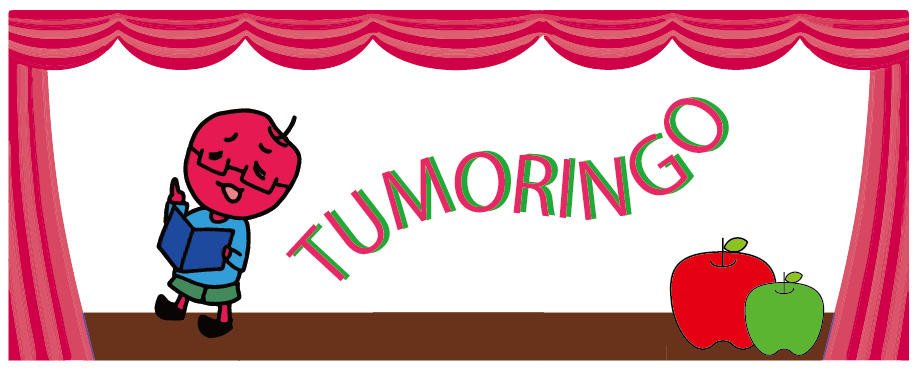

課題のヒント
HOME
NEWS
ABOUT
MEMBER
PROJECTS
PUBLICATION
CONTACT
質問フォーム
よくある質問
キャラクター
今日の天気

Previous
Next
提出されたものの中から毎月MVPを掲載します！!
Tweets by tankyu_station
実験
スライム編
観察
天気予報
調査
順次公開予定
運動
順次公開予定
製作
順次公開予定
プログラミング
たんきゅうstudio
たんきゅう花火大会
順次公開予定
運動：ウィルスに負けない！作ろうオリジナル筋肉体操（きんにくたいそう）！！（小学校中学年〜高学年）
運動：１週間でどこまで柔（やわら）らかくなるかな？（小学校中学年以上）
記録：新型コロナウィルスの影響を歴史に残そう（小学校中学年～高校生）
調査：食べ物はどこから？（小学校中学年〜高学年）
調査：洋服はどこから？（小学校中～高学年）
調査：スカイスクリューの秘密（ひみつ）を探（さぐ）ろう（小学校中学年〜高学年）
調査：雲と天気（小学校中学年～高学年）
調査：お札の謎（なぞ）を調べよう（小学校中学年〜高学年）
調査：身の回りの対称図形をさがそう（小学校高学年）
調査：慣用句・ことわざカルタの達人になろう（小学校中学年〜高学年）
調査：財務大臣（ざいむだいじん）になって予算をつくろう！（中学生〜高校生）
調査：毎日使うもの，１日でどれだけ減るの？（小学校中学年〜高学年）
調査：東京オリンピックを占おう（小学校中学年〜高学年）
観察：フェルメールとレンブラント（小学校中学年以上）
観察：電化製品（でんかせいひん）の中（なか）は、どうなっているのかな？（小学校低学年〜高学年）
観察：今年の桜はいつ開花する？（小学校中学年〜中学生）
観察：家の中の見えない汚れを探してみよう（小学校中学年以上）
観察：ツバメについて（小学校中学年）
観察：たねはど〜こだ（小学校低学年）
製作：ペットボトルのキャップであそぼう（小学校低学年）
製作：もしも自分が偉人（いじん）だったら（小学校高学年）
製作：オリンピック，外国の人々へのおもてなし（小学校高学年〜高校生）
製作：家族で共有できるGoogleマイマップを作ってみよう（小学校高学年〜中学生）
製作：ふようひんをつかって，つくろう・あそぼう（小学校低学年）
製作：夢（ゆめ）のシャボン玉を作ってみよう（小学校低学年〜中学年）
製作：偉人（いじん）パンフレットを作ろう（小学校高学年）
製作：バッグをつくろう（小学校中学年～高学年）
製作：グルメマップを作ろう（小学校高学年〜中学生）
製作：安全マップをつくろう（小学校中学年〜高学年）
製作：「コロナ対策（たいさく）ブック」をつくろう（小学校低学年〜高校生）
製作：「百均で作れる！！災害時に便利なモノ」リストを作ろう（小学校高学年）
製作：特産物を使って「お土産」をつくろう（小学校中学年以上）
制作：栄養満点（えいようまんてん）カレー作り（小学校低学年〜高学年）
製作：オリンピック会場で販売（はんばい）する弁当をつくろう（中学生〜高校生）
調理：オリジナル防災レシピをつくろう（小学校高学年）
調理：ぬか漬け作りにチャレンジ（小学校中～高校生）
栽培：再生する植物「豆苗（とうみょう）」をしらべてみよう （小学校低学年〜高学年）
実験：環境にやさしいくらし（小学校中学年以上）
実験：減るのが早いのはどっちの水（小学校高学年〜中学生）
プログラミング：そうじの仕方を考えよう（小学校低学年〜中学年）
プログラミング：ゲームをつくろう（小学校中学年〜高学年）
プログラミング：ピタゴラスイッチ（小学校低学年〜高校生）
「自分で学ぶ，探究の世界」のページにもどる
「ポートフォリオの作り方」のページにもどる
「さあ，探究をはじめるよ」のページにもどる
Twitter
Instagram
Facebook
YouTube